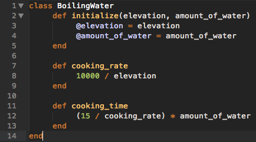

When to Create a Class
I am in the very shallow end of the programming world, but I am really loving it. One of the great things about being in the shallow end is that everything is new and exciting. One of the bad things about being in the shallow end is that most everything is new and unknown. I remember reading that Ruby is object orientated and seeing that phrase everywhere like it was supposed to mean something. Finally, that phrase is beginning to have meaning to me, but this is the experience I have had trying to learn programming. You hear something and it has emphasis like it is important, but it can seem so meaningless. Programming is entering another world, another way of thinking, mostly foreign to my other experiences. As I read through books to help me in my progress, I have to be careful and tie what I am reading to what I am actually doing, as to not abstract too far from the actual process. With that said, I have been reading through the book Practical Object-Oriented Design in Ruby (POODR) and what I am seeing is the importance of design tied to the reality that when designing a program, you have the least knowledge of the end goal. Software is all about flexibility, change, the addition of new features, etc… How do you create something with the ability to change when you don’t know what those changes will look like?
In the context of Ruby, organization comes in the form of classes and methods. A class contains a certain amount of information and behaviors that help give features or usability to any object created in that class. Imagine a bike or a car class. There are many types of cars, but there are features and characteristics that describe all cars. They all move, have an engine, have doors, etc… In creating a program, you are creating a whole world from bits of information. The organization of that information can quickly become out of hand in the effort to create a functioning program that makes the world better. As I have been reading through classes, I want to take a moment and describe what I have learned about when to create a class and how much information to give it. Before I jump into this, I think it is important to remember that real world programs can have thousands of classes. I am only creating single classes just to understand them better. I can only give limited perspective based on what I have seen, but hopefully I am working towards a good foundation with some quirks to work out along the way.
The term used in POODR is single responsibility. Single responsibility means that each class is used in the goal of a single, simple responsibility. Don’t try to do too much so that you can easily reuse classes in ways that could surprise you down the road. Thinks of legos. Imagine a lego piece that only fits with the creation of one castle. It is an awesome, complicated piece, but if it doesn’t fit with other blocks, you can’t create something awesome later. The whole fun of legos is the infinite possibilities of things you can create. Try to think of creating code like building with legos. To look at this a little closer, it might help to have an example with a little code. Imagine trying to create a program for chef’s. Take one of the most important parts of cooking: boiling water. Your user wants to know how long it will take to boil water for each restaurant he has so he can perfect the timing at each location. Water boils slower at higher elevation because it has a lower boiling point temperature. I don’t know the specifics, but let’s use our imagination.
elevation = x
rate = 10,000 / x
amount of water = z
time = z * (15 / rate)
elevation = 10,000
rate = 10,000 / 10,000
amount of water = 2
time = 2 * (15 / 1) = 30 minutes to boil 2 liters of water
elevation = 1,000
rate = 10,000 / 1,000
amount of water = 2
time = 2 * (15 / 10) = 3 minutes to boil 2 liters of water
This obviously isn’t great, but it gets the principle across at least. Let’s look at the class that accomplishes this goal.

In the scope of creating software to help a chef who is anal about the prep process and how when exactly to start cutting the celery or something, there would be a lot more to add. However, we have one thing that we need to do which is get the time to boil an amount of water. Now, we have a class that accomplishes just that. It isn’t trying to tell him when to cut the celery. This is the point of single responsibility, and the use of this principle will help you create software that you can enjoy developing and adding more features as it changes in the same way you maybe used to enjoy building with legos.